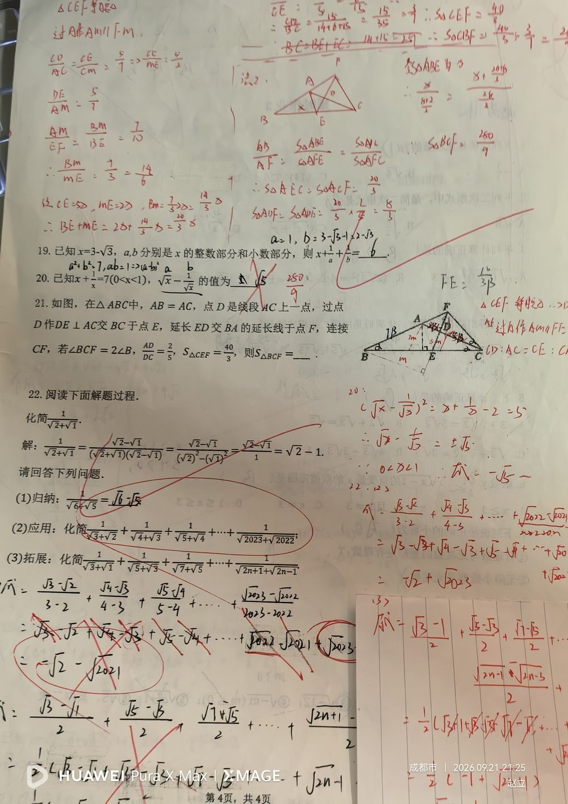

① x + 1/x = 7； ② 0 < x < 1（这个范围条件很关键）； ③ 求 √x − 1/√x 的值。
求 √x − 1/√x 的值（注意确定正负号）。
① 设 t = √x − 1/√x，两边平方： t² = (√x)² − 2·√x·(1/√x) + (1/√x)² = x + 1/x − 2； ② 代入已知：t² = 7 − 2 = 5； ③ 【关键一步】判断符号：∵ 0 < x < 1 ⇒ √x < 1 < 1/√x ⇒ √x − 1/√x < 0； ④ ∴ t = −√5（不能取 +√5）。
① 【本题最大的坑】漏掉符号判断：只算到 t² = 5 就写 √5 —— 若琳就是这么错的；条件 0 < x < 1 的唯一作用就是决定取负号； ② 平方展开漏项：应为 x + 1/x − 2（别丢 −2，也别写成 +2）； ③ 混淆 (a − b)² 与 a² − b²； ④ 忘记 √x · (1/√x) = 1 这一步，导致化简卡住； ⑤ 结果应带根号写 −√5，不要写成小数近似。
① 完全平方公式 (a − b)² = a² − 2ab + b²； ② 二次根式的乘法化简：√x · (1/√x) = 1； ③ 由范围判断代数式的符号（0 < x < 1 ⇒ √x < 1 < 1/√x）； ④ 常用变形：x + 1/x 与 (√x ± 1/√x)² 的互化（7 − 2 = 5、7 + 2 = 9）。